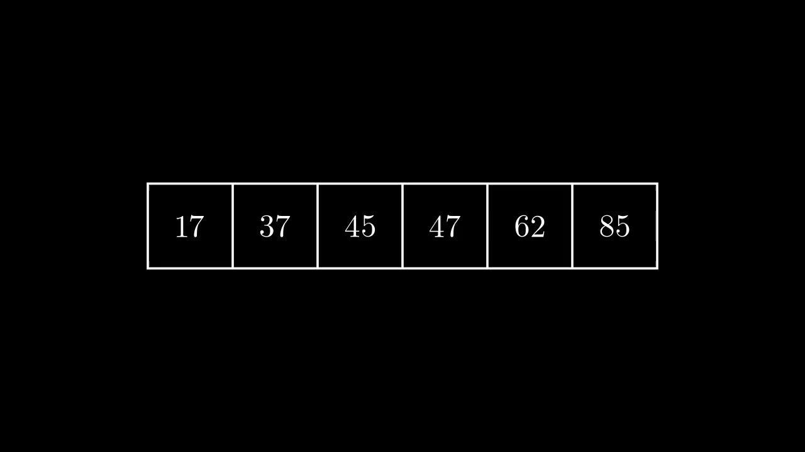

Listes Chaînées
Le problème de la structure tableau
La structure de type tableau permet de stocker des séquences d'éléments dans des zones contigües de la mémoire, mais n'est pas forcément adaptée à toutes les opérations possibles sur ces séquences.
Par exemple, la structure de tableau de Python permet grâce aux méthodes append et pop d'ajouter et de supprimer
relativement efficacement un élément en dernière position dans un tableau déjà existant (ce n'est pas le cas dans d'autres
langages, où de telles méthodes n'existent pas forcément).
Lorsqu'on veut insérer un élément à une autre position on peut, toujours en Python, utiliser a méthode insert qui insère un élément à une position donnée. Mais cette méthode
cache un certain nombre de problèmes, dont le coût en temps.
Que fait insert lorsqu'on veut ajouter un élément en position 0
Imaginons que nous avons un tableau tab, pour lequel nous voulons insérer la valeur \(8\) en première position :

Au total, nous avons réalisé un nombre d'opérations qui est proportionnel à la taille du tableau !Sur un petit, tel que celui-ci, il n'y a pas trop de problèmes, mais sur un tableau contenant plusieurs millions d'entrées, le nombre d'opérations devient bien trop important.
Heureusement, il existe d'autres ménières de stocker des informations, qui permettent une modification bien plus rapide des différents éléments.
Les listes chaînées
Construction d'une liste chaînées
Liste chaînée
Une liste chaînée est une structure permettant d'implémenter une liste, c'est-à-dire une séquence finie de valeurs (de même type ou non). Les éléments dont dits chaînés car chque élément possède l'adresse mémoire de l'élément suivant de la liste.
Exemple

On a représenté ici une liste chaînée de trois éléments :
- Le premier est \(21\), et il pointe vers l'adresse mémoire du second ;
- Le deuxième élément est \(15\) et il pointe vers l'adresse mémoire du troisième ;
- Le troisième élément est \(45\). Il ne pointe vers rien (l'adresse du suivant est
None). On a atteint la fin de la liste.
Implémentation d'une liste chaînée en Python
La méthode classique pour implémenter une liste chaînée est de construire une classe d'objets possédant deux attributs : un pour la valeur et un pour l'adresse du chainon suivant :
1 2 3 4 5 | |
Une fois cette classe définie, la construction de la liste s'effectue de la manière suivante :
chaine = Chainon(21, Chainon(15, Chainon( 45, None)))
Ici, on a créé trois objets de classe Chainon qu'on peut visualiser ainsi :
Remarque
Cette construction est une construction récursive. Il est possible de construire cette liste chainée de manière itérative, mais il faut alors commencer par le dernier élément :
last = Chainon(45, None)
second = Chainon(15, last)
first = Chainon(21, second)
Opérations sur les listes chaînées.
Longueur d'une liste chaînée
Nous allons créer maintenant une fonction longueur qui calcule la longueur d'une liste chaînée telle que nous l'avons implémentée.
Cette fonction devra :
- renvoyer 0 si la liste est vide ;
- renvoyer le nombre d'éléments de la chaîne sinon.
Le plus simple est d'utiliser la récursivité :
def longueur(liste) :
if liste == None :
return 0
else :
return 1 + longueur(liste.suivant)
Et en itératif ?
def longueur(liste) :
n = 0
chainon = liste
while chainon is not None :
n+=1
chainon = chainon.suivante
return n
Exercice : n-ième élément
Créer une fonction niemeElement(liste, n) qui renvoie le n-ième élément de la liste passée en argument
A venir !
Exercice : Concaténation de deux listes
Créer une fonction concatener(l1, l2) qui renvoie la liste obtenue par concaténation de l1 et l2.
A venir !
Exercice : Insertion d'un chainon
Créer une fonction inserer(v, n, liste) qui insère l'élément v à la position n dans la liste passée en argument.
A venir !